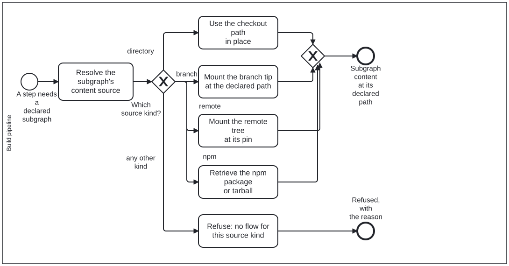

Generated from
cat-harness/processes/kg/mount-subgraph.bpmnbygen-processes-viz.ts— do not edit here. All processes
Process_MountSubgraph · strict · 6 step(s)
Making a declared subgraph’s content available at its declared path, whatever its content source.
You are in this process whenever a step is about to read or write the contents of a declared subgraph — beans, todos, fsh-guts, or any directory a declaration names. The source is resolved once, by declaredSubgraph (schemas/harness-config.ts) through resolveSubgraphSource (schemas/subgraph-source.ts): the instance config’s subgraphSources override by id, then the entry’s source, then a legacy storage, then the directory default.
The gateway is on the source KIND, and its flows are the only places the kinds differ. A directory subgraph is already where its path says, and writing it is an ordinary commit. A branch subgraph is mounted from the declared branch’s tip into its path, and written back by splicing onto the tip without force. A remote subgraph is another repository’s tree at a pinned commit, laid down by Process_MountDependency and read-only here. An npm subgraph is an npm package or tarball retrieved via kg-retrieve-npm or npm. A kind with no flow here is refused.

| lane | role | what it does here |
|---|---|---|
| Build pipeline | build-pipeline |
Mechanical: every decision on this lane is read off the resolved source, so the same declaration mounts the same way in every container, and an override in the instance config is the only thing that changes it. |
Every one of the 6 step(s) is documented.
| step | lane | skill / sub-process | what it does |
|---|---|---|---|
Resolve the subgraph’s content sourceTask_ResolveSource |
Build pipeline | sub-kg-lifecycle |
declaredSubgraph(start, id): the declaring instance, the entry, and theresolved source with declaredIn saying which layer answered. Never readsource off the declaration directly — the config override and thelegacy storage field are folded in by the resolver and nowhere else.A contradiction (both source and storage; a qa subgraph keyed bytip) throws here, before anything is mounted. |
Use the checkout path in placeTask_UseCheckoutPath |
Build pipeline | sub-kg-lifecycle |
A directory source IS its declared path. Nothing is mounted; a write isan ordinary commit on the working branch, which is why branch-store<br>push answers “commit through git” for it rather than pushing anything. |
Mount the branch tip at the declared pathTask_MountBranchTip |
Build pipeline | sub-kg-lifecycle |
A branch source keyed by tip: branch-store mount --id <dir-id>writes the tip’s files at the declared path, so every reader finds the directory where it always was; push splices edits back onto the tip,never forcing, and a same-file race is a conflict. The branch’s NAME is the declaring directory’s storage (or source) — a branch nodeclaration names is refused rather than guessed. A commit-keyed branch is readper commit through its own store ( qa-store), not mounted. |
Mount the remote tree at its pinTask_MountRemotePin |
Build pipeline | remote-mount |
A remote source (bean 0mpw): another repository’s tree at a full40-character commit. bun run cat mount:remote lays it down at the declaredpath and locks its tree digest; it is never written back, because the bytes are somebody else’s at somebody else’s pin. Usually reached through a source.remote instance in the root index.config.json(legacy: remoteMounts), which expands a whole harness and its closure —Process_MountDependency. |
Retrieve the npm package or tarballTask_RetrieveNpmPackage |
Build pipeline | npm-kg-distribution |
An npm source (schemas/subgraph-source.ts, npm-kg-distribution): annpm package specifier or tarball path ( .tgz). kg-retrieve-npm or npmfetches and unpacks the package contents into the declared path. |
Refuse: no flow for this source kindTask_RefuseUnknownKind |
Build pipeline | sub-kg-lifecycle |
A kind added to the union (a graph database, say) before this diagram and the mount tool learn it. Refused with its own exit code — reading it as a directory would scan an empty path and report it clean, the dh4fdefect. |
Every one of the 1 decision(s) is documented.
| decision | what decides it | branches |
|---|---|---|
Which source kind?GW_SourceKind |
The resolved source’s kind: directory, branch, remote, npm, or a kind this diagram has no flow for. |
directory → Use the checkout path in place branch → Mount the branch tip at the declared path any other kind → Refuse: no flow for this source kind remote → Mount the remote tree at its pin npm → Retrieve the npm package or tarball |